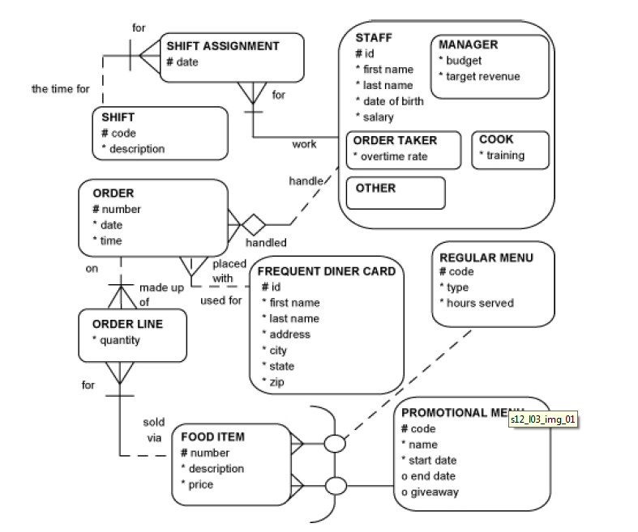

This lab will put into practice creating constraints on tables.
You have already created several tables, however they do not have any constraints on them yet. In order to put constraints on the tables we can drop the tables and recreate them.
Please open the .sql file you saved last week containing your CREATE TABLE statements. If you do not have your own work complete from last week, here is a copy:
Constraints that we should add are primary key, unique keys, foreign keys and mandatory attributes.
First you must write a DROP TABLE statement to remove the already created tables and then we edit the CREATE TABLE statements to define the constraints and re-run the CREATE TABLE statement.
DROP TABLE IF EXISTS graduates;Include a DROP TABLE statement just prior to each CREATE TABLE statement in your .sql file
Now we edit your CREATE TABLE statement:
You should have a unique identifier shown on your ER diagram. For the graduates table it is student_id.
We implement the primary key constraint by using the PRIMARY KEY reserved word in MySQL.
We can also use a useful feature that generates an id, it will start at 1 and increment by 1 for each new record entered into the table. The keyword to use is: AUTO_INCREMENT
CREATE TABLE graduates
( student_id INT(6) PRIMARY KEY AUTO_INCREMENT,
last_name VARCHAR(15),
first_name VARCHAR(15),
credits INT(3),
graduation_date DATE
);Do the same now for the other tables from lab8, shift, shift assignment, order, order line, food item and frequent diner card.
We implement mandatory attributes using the NOT NULL keywords. This ensures that each instance of an entity will have a value contained in the attribute you state is NOT NULL.
For example in the graduates table, it would be advisable to have last_name, and first_name as mandatory when each new student is added to the system. They will earn credits over time and the graduate date will be entered upon completion of the programme.
DROP TABLE IF EXISTS graduates;
CREATE TABLE graduates
( student_id INT(6) PRIMARY KEY AUTO_INCREMENT,
last_name VARCHAR(15) NOT NULL,
first_name VARCHAR(15) NOT NULL,
credits INT(3),
graduation_date DATE
);By having the DROP TABLE statement right before the CREATE TABLE means you can run the section of code or the complete script without errors.
Here we have added NOT NULL to the appropriate attributes.
Do this now for only the shift, order, frequent diner card and food item tables (ignore order line and shift assignment), refer to the ER diagram for the Fast Food Restaurant below:

A foreign key is a field in a table that matches another field of another table. A foreign key places constraints on data in the related tables, which enables MySQL to maintain referential integrity.
If we look at the relationship between Order and Frequent Diner Card.
This is a 1:M one to many relationship. - The Frequent Diner Card is the parent entity. - The Order is the child entity.
In this case a row in the orders_ff table may contain a value that matches a value in the primary key of the frequent_diner_card table. We must add another column to the orders_ff table that refers to the frequent_diner_card table. We will call this new column freq_diner_num.
The syntax for creating a foreign key is as follows:
FOREIGN KEY foreign_key_name(column(s))
REFERENCES parent_table(column(s))
ON DELETE action
ON UPDATE actionThe following SQL will drop and then recreate these two tables with a foreign key.
DROP TABLE IF EXISTS orders_ff;
CREATE TABLE orders_ff
(
number INT(6) PRIMARY KEY AUTO_INCREMENT,
date DATE,
time TIME,
freq_diner_num INT(6),
FOREIGN KEY fk_dinercard(freq_diner_num) REFERENCES frequent_diner_card(id)
ON UPDATE CASCADE
ON DELETE SET NULL
);Using the following entities, write the CREATE TABLE statements for both tables. Ensure you implement the primary keys and foreign key.
Sometimes the parent and child table are the same. The foreign key refers back to the primary key of the table. For example the employees table:
Each Employee may manage one or more Employees. Each Employee must be managed by one Employee.
To implement this relationship we must add another column to the employees_b table that refers to the primary key of the same table.
CREATE TABLE employees_b
(
employeeNumber INT(6) PRIMARY KEY AUTO_INCREMENT,
lastName VARCHAR(20),
firstName VARCHAR(20),
extension INT(4),
email VARCHAR(35),
officeCode INT(4),
managed_by INT(6),
FOREIGN KEY FK_mgr_num(managed_by)
REFERENCES employees_b(employeeNumber)
ON DELETE SET NULL
ON UPDATE CASCADE
);When you want to enforce uniqueness in a column you need to use the UNIQUE constraint.
Syntax for defining at the column level single column:
CREATE TABLE table_name (
column_name data_type Unique
);or at the table level single column:
CREATE TABLE table_name (
column_name data_type,
UNIQUE(column_name)
);or at the table level multi column:
CREATE TABLE table_name (
column_name data_type,
column_name2 data_type,
UNIQUE(column_name,column_name2)
);Add another column to the graduates table, call it email and define it with a UNIQUE constraint. Consider what other columns on the tables you have created in this lab should also have UNIQUE constraints added.
The NOT NULL constraint is a column constraint that forces the values of a column to non-NULL values only.
The syntax is as follows:
CREATE TABLE table_name (
column_name data_type NOT NULL
);Look again at all the tables you have created in this lab and add NOT NULL where appropriate. Make sure all of your tables drop and recreate when you run your script.